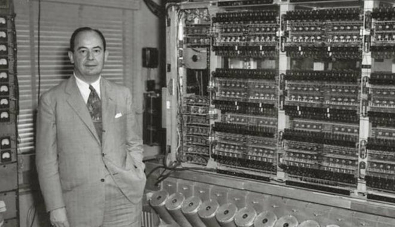

Az ENIAC az első elektronikusan működő számítógép építési tapasztalatai alapján fogalmazta meg Neumann János 1946-ban a számítógép építésének máig ható elveit.
.gif)
Az EDVAC már a Neumann – elveken épült. (1949)
ForrásAlapfogalom: a halmazelméletben mindent le lehet írni két kifejezéssel. Az egyik a „halmaz”, a másik az a kijelentés, hogy egy adott dolog „eleme” egy halmaznak.

A 19. század vége felé két matematikus, Richard Dedekind és Georg Cantor magán a fogalmak szigorúbb definíciójánál jelentősebb eredményeket ért el a valós számok elméletében. Richard Dedekind bebizonyította, hogy a racionális és irracionális számok mindenhol sűrűn helyezkednek el a valós számok között, azaz minden intervallumban - legyen bármilyen kicsi - van akár irracionális, akár racionális szám. Georg Cantor pedig azt bizonyította be, hogy a valós számok halmaza nem lehet megszámlálhatóan végtelen (a Cantor-tétel egy speciális esete, melyet az átlós eljárással igazolt). Ennek a cikknek az 1874-es publikálását tekintjük a halmazelmélet megszületésének.
A halmazelmélet cantori szemlélete szerint: tetszőleges T tulajdonság egy olyan halmazt határoz meg, mely azokat az elemeket tartalmazza, melyekre T teljesül.
Ez a komprehenzivitási elv, mely azonban a naiv halmazelmélet javíthatatlan hibáinak forrásává vált. A naiv halmazelméletben ugyanis Bertrand Russell 1904-ben (és ezzel egy időben sokan mások is, például maga Cantor) ellentmondást, úgynevezett antinómiát fedezett fel (lásd: Russell-paradoxon). Mivel közben az is kiderült, hogy a matematika csaknem teljesen a halmazelméletre alapozható, ezért ezek az ellentmondások az egész matematika számára is problémát jelentettek. Legelőször Zermelo végzett eredményes kutatásokat az említett ellentmondások kiküszöbölésére. Zermelo vizsgálatait Fraenkel bővítette – kialakítva az úgynevezett Zermelo–Fraenkel-féle axiómarendszert. Más halmazelméleti axiómarendszereket is alkottak (például a Neumann–Bernays–Gödel-halmazelmélet), melyek nagyban hozzájárultak a modern halmazelméleti kutatások eredményességéhez.
ForrásTeller Ede értékelése szerint Neumann János "az atombomba fejlesztés legfontosabb (habár nagyrészt észrevétlen) tudományos segítője volt". A magyar közvélemény is ezt a tevékenységét ismeri legkevésbé.

Szilárd Leó kezdeményezésére Einstein 1939 nyarán, röviddel az atommaghasadás felfedezése után, felhívta F.D. Roosevelt amerikai elnök figyelmét a nukleáris láncreakció katonai jelentőségére és az előrehaladott német kutatásokra. 1942 szeptemberében katonai irányítással indították el a Manhattan-terv fedőnevű kutatási programot. Cél: a bevethető atomfegyver létrehozása. Párhuzamosan folytak a kutatások több irányban is. Óriási anyagi és szellemi erőket koncentráltak a feladatra. Titkos kutatóvárosok és gyártelepeket hoztak létre: Los Alamos, Oak Ridge, Hanford
Az urán dúsítására - a lassú neutronok hatására hasadóképes könnyű urán-235 izotóp részarányának növelésére többféle megoldást dolgoztak ki (az elektromágneses, centrifugás és gázdiffúziós szétválasztást). Az uránbombában a kritikus tömeget meghaladó anyagmennyiséget két részre bontották, a robbantáskor egymásba lőtték a részeket. Az első uránbombát Hirosimára dobták le 1945. augusztus 6-án. A plutónium elemet 1940-ben fedezték fel az Amerikai Egyesült Államokban. 1941 májusára kiderült, hogy a plutónium-239 izotóp lassú neutronokra vonatkozó hasadási hatáskeresztmetszete az urán-235 hatáskeresztmetszetének 1,7-szerese, tehát a plutónium alkalmas bomba alapanyagnak. Wigner Jenő szerint az egyetlen akadály a plutónium előállítása, a többi "könnyű és kézenfekvő". Teller Ede fordítva ítélte meg a helyzetet, a plutónium gyártást nem látta nehéznek, de számára akkor sem tűnt egyszerűnek atomfegyvert szerkeszteni. 1943 tavaszán még csak néhány száz milligramm, gyorsítókban előállított plutónium-239 állt rendelkezésre a mérésekhez. A magfizikusok még a plutónium alapadatait mérték, amikor már ejtési és robbantási kísérleteket végeztek bombamodellekkel.
S. Neddermeyer robbantási szakértő arra gondolt, hogy gömbhéjakba rendezett hasadóanyag berobbantásával is lehetne bombát építeni. Hengeres fémdarabokat rakott körbe hagyományos robbanóanyagokkal és a fémrúd összenyomódását vizsgálta. Ezek voltak az első implóziós kísérletek (az implózió - egy test robbanásszerűen gyors térfogatcsökkenése, összeomlása). Az implózió elméletének kidolgozásába kapcsolódott be Neumann János, aki esetenkénti szakértői szerepet vállalt a Manhattan-tervben. Teller visszaemlékezése szerint "Neumann János olyan értékes volt nemcsak matematikusként, hanem gyakorlatilag minden téren, hogy a vissza-visszatérő közreműködésének nagyon örültünk. Szabadon jöhetett-mehetett köztünk (Los Alamosban)." Lax Péter emlékezete szerint "Neumannt mindenki nagyon várta Los Alamosba, nemcsak a matematikusok, hanem a fizikusok is. Vele mindenki akart beszélni, hogy elmondhassa legújabb problémáját vagy eredményét. Amit Neumann mondott, arra mindenki odafigyelt. Ma már nincs olyan matematikus, aki a fizikusokat is ennyire érdekli."
Neumann ismerte az irányított robbantások módszerét. Korábban a haditengerészet felkérésére különböző alakú lövedékek által keltett lökéshullámok bonyolult hidrodinamikájával foglalkozott, munkája a tankelhárító bazooka- (páncélököl-) lövedékek fejlesztéséhez kapcsolódott. Az irányított robbantásokról előadást tartott Los Alamosban, itt ismerte meg Neddermeyer elgondolását, ezután kezdte meg számításait. 1943 októberben Neumann és Teller számításaik alapján meggyőzték J. R. Oppenheimert, Los Alamos tudományos vezetőjét arról, hogy az implózió felhasználásával megbízhatóbb és kisebb, könnyebben szállítható bombát lehet előállítani, méghozzá gyorsan. Az új megoldásra annál is inkább szükség volt, mert időközben kiderült, hogy az uránhoz hasonló, a hasadóanyagok összelövésére alapozott megoldás a plutónium esetében gyakorlatilag megvalósíthatatlan. Az eltérő hasadási tulajdonságok miatt a plutóniumrészeket elérhetetlenül nagy sebességgel kellett volna egymásba lőni. Az elméleti részleget vezető Hans Bethe Tellerre akarta bízni az implóziós számítások folytatását, Teller azonban nem vállalta, ezért a brit R. Peierls kapta meg a feladatot.
1944 januárjában G. Kistiakowsky, vegyész is csatlakozott a robbantási kísérletekhez. 1944 áprilisában érkezett meg Los Alamosba az IBM lyukkártyás számítógépe, eredetileg különböző alakú hasadóanyag-tömbök kritikusságának számítására szánták. (Teller: "Ezt a fajta gépezetet legföljebb annyiban lehetett fejlettnek tartani, hogy elektromos kapcsolatok irányítottak benne mechanikai mozgást.") S. Ulam és az elméleti osztály munkatársai az implózió számításába kezdtek. (Ulam lengyel matematikus volt, Neumann biztatására emigrált Európából, Los Alamosba is Neumann ajánlotta.) A számítógép különösen alkalmasnak bizonyult az összetett hidrodinamikai problémák kezelésére, így Neumann a számítógépek tökéletesítésén kezdett el dolgozni. A hagyományos robbanóanyagokkal végzett implóziós kísérletekben kiderült, hogy a külön-külön robbanó töltetek által keltett lökéshullámok távolról sem egyenletes nyomást fejtenek ki a mintára, egyes pontokban felerősítik egymást. Ha a nyomás nem egyenletesen oszlik el, akkor az implózió tökéletlenül megy végbe. J. L. Tuck brit fegyverszakértő "lencseszerű" robbanóanyag-elrendezést javasolt, melyben az elrendezés az optikai lencséhez hasonló szerepet tölt be. A megoldás túl bonyolultnak tűnt, vizsgálatához már nem akartak hozzákezdeni. Végül Neumann tervezte meg a lencserendszert, Kistiakowsky és Neddermeyer pedig hozzákezdett megépítéséhez. A kísérletek 1944. december végén sikeresen lezajlottak. H.H. Goldstine szerint: "Kétségkívül Neumann-nak az volt a legjelentősebb hozzájárulása a Los Alamos-i tervhez, hogy bemutatta az elméleti szakembereknek, hogyan lehet a jelenségeket matematikailag modellezni és az eredményül kapott egyenleteket numerikusan megoldani. A laboratóriumi probléma kezelésére egy lyukkártyás berendezésekkel fölszerelt laboratóriumot létesítettek, amely később a világ egyik legfejlettebb és legnagyobb számítóközpontjává nőtt."
1944 őszén a fegyverfejlesztők biztosak voltak abban, hogy az uránbomba kipróbálás nélkül is működni fog, robbanóerejét 10 kilotonna TNT-vel egyenértékűnek becsülték. A plutóniumbombát illetően bizonytalanabbak voltak, robbanóerejét nagyságrendben 1 kilotonnának, majd még kisebbnek becsülték. 1944 márciusában kezdték el tervezni az implóziós bomba kísérleti robbantását Trinity kódnév alatt.
A Los Alamosban végzett fejlesztőmunkával párhuzamosan a Manhattan-terv részeként megoldották a plutónium nagyüzemi gyártását. Washington államban, Hanfordban három óriásreaktort építettek, a vízhűtéses reaktorokat Wigner Jenő tervezte. A neutronokkal besugárzott urán-238 két béta-bomlással plutónium-239 izotóppá alakul. A nagyüzemi gyártás 1944. decemberben indult be. 1945. július 16-án sikeres kísérleti robbantást hajtottak végre Alamogordo közelében (Új-Mexikó), majd 1945. augusztus 9-én Nagaszakira dobták le a második plutóniumbombát. 1946. júniusban már további 9 plutóniumbombával rendelkezett az Amerikai Egyesült Államok.
Neumannt bevonták a bombázandó japán célpontok kiválasztásába. A bizottságban 1945 tavaszától katonák és szakértők elemezték a lehetséges célpontokat, Neumann feladata a szükséges számítások elvégzése volt. Tizenhét lehetséges célponttal kezdték, majd több lépcsőben háromra szűkítették a célpontok listáját: Kiotó, Hirosima és Niigata. A végső döntésekben a bizottságnak nem volt szerepe. Az 1940-es évek végén, az első szovjet atombomba felrobbantása előtt, az amerikai légierő megelőző csapásokat tervezett, az elemzésekben Neumann is részt vett.
Forrás